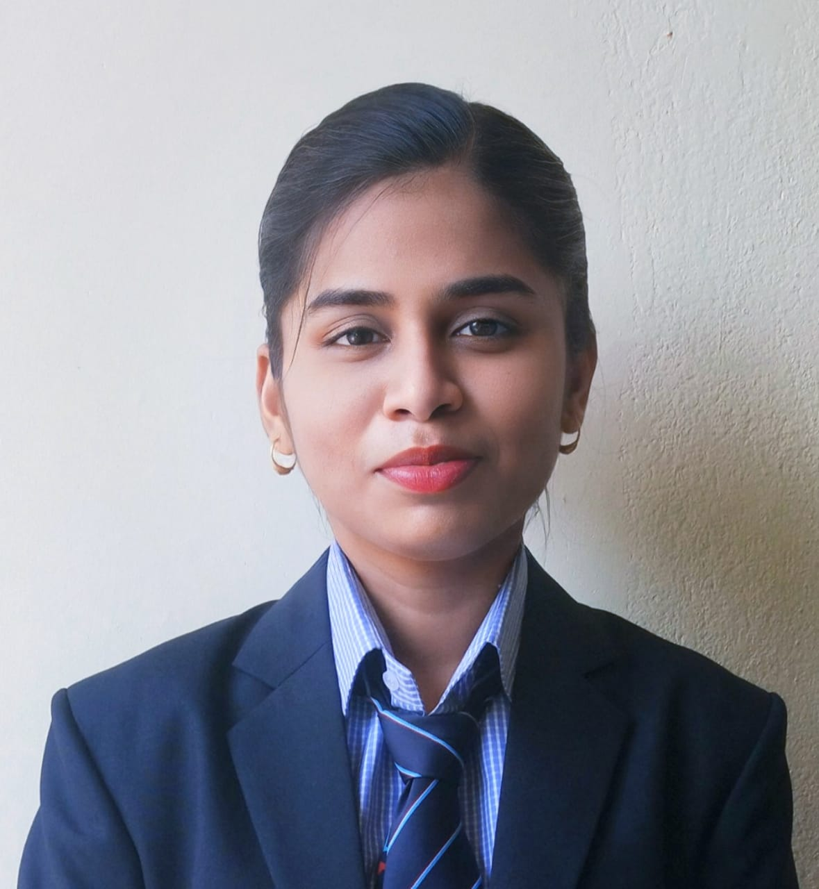

Dibyajyoti palei
student
profile
parsuing MCA at Gandhi institute for technology Bhubaneswar
I consider my self a responsiable and orderly person
I am looking forward for my first work experience
Contact
- Address:Krushnaprashad,puri
- Phone:9861664414
- Email:dibyajyotipaei2011@gmail.com
linkedin id:Dibyajyoti palei
Professional skills
- languages :java,c
- web Technology :jsp,jdbc,html,css
- RDBMS:Mysql
- Tools used:Net Beans 7.0
|
summary
A highly motivated and skilled engineering graduate looking for an entrylevel position as a software engineer.solid knowledge about design and coding .strong ability to execute full SDLC(Software development life cycle) handling project.
Internship/Project
- done Internship at ocac on a live project Grievance redressal system using jdbc
- e- commerce website
Education
- 2022-2024 : persuing mca at Gandhi institute For Technology,Bhubaneswar
- 2019-2022 : complete graduation with 79%
- 2017-2019 : 12th with 66%
- 2017: 10th with 81%
Hobbies
strength/weakness
- strength:i always understand the value of time,and i am always able to innovate.Listen advice from other
- weakness:i trust too easily
|